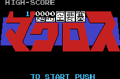

Macross - Nintendo Games

- Company: Namco/Bandai
- Date Released: Dec 1985
- Price (in yen): 4800
- Genre: Shooting game
Controls
- A button: Change Valkyrie Form
- B button: Fire Gun
- Start: Pause
- Select: Fire Missles
You pilot your Valkyrie as you blast countless swarms of enemy ships. To change the form of your
Valkyrie, press the A button + Up/Left/Right.
Anime Video Game Resource Center © 1998 by Luis A. Cruz